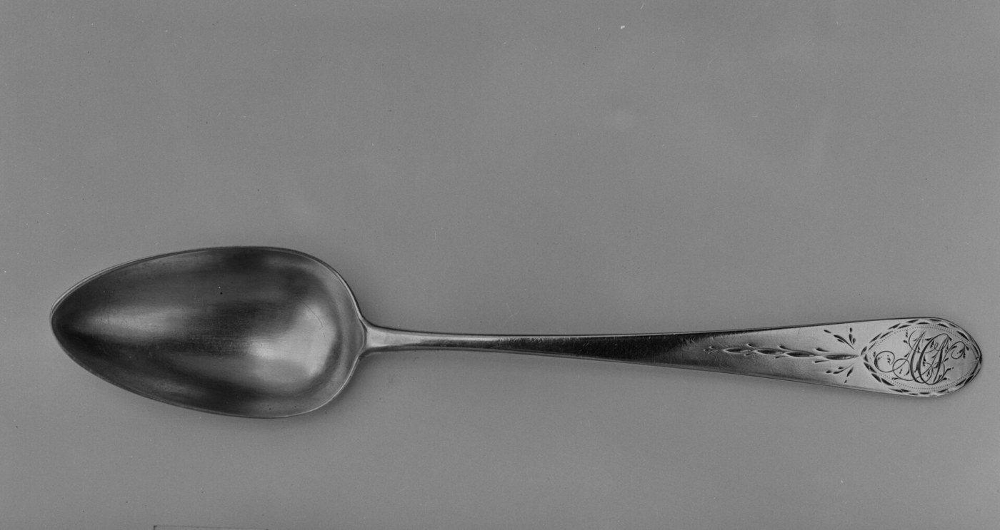

制作側の連想
アンテナの部位を、配置図にしてみる
屋根の上のテレビ用アンテナ(棒を並べた形のもの)の部位を図にしたもので、制作側の連想です。お店の理念・由来とは無関係で、実際の製品の仕様を示すものでもありません。 六つの部位に番号をふり、上の図と並べています。
凡例
六つの部位
- 1導波器放射器より前に並ぶ、短めの棒の部分。電波の来る向きをそろえるはたらきがある。
- 2放射器電波を受け取る中心の棒で、輪のように折り返した形のものも多い。
- 3反射器放射器の後ろに置く、少し長めの棒の部分。後ろ側から来る電波を押し返す。
- 4ブーム棒を並べて支える、一本の横軸の部分。棒の間隔を保つ役目もある。
- 5給電部放射器の中央にある、同軸ケーブルをつなぐ部分。受けた信号をここから送り出す。
- 6マスト取付金具ブームを支柱(マスト)に挟んで留める金具。向きを合わせてからボルトで締める。
写真(イメージ)
写真(イメージ)



写真はイメージです。お店のものではありません。
ご案内
お店のこと(確認できたものだけ)
| 所在地 | 〒321-0528 栃木県那須烏山市小倉１０８６−１２ |
|---|---|
| 電話 | 準備中 |
| 営業時間 | 準備中 |
| 定休日 | 準備中 |
| ご予約 | 準備中 |
| 駐車場 | 準備中 |
| SNS | Instagram @2_7coffee |